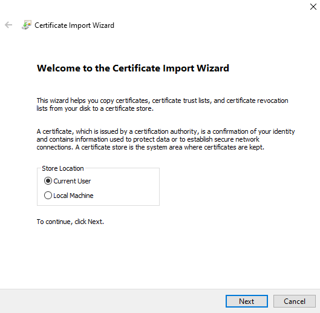
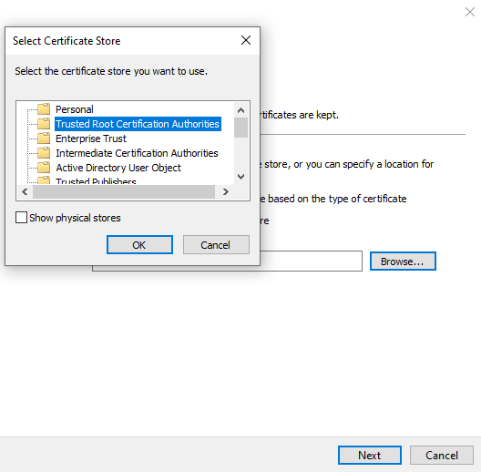
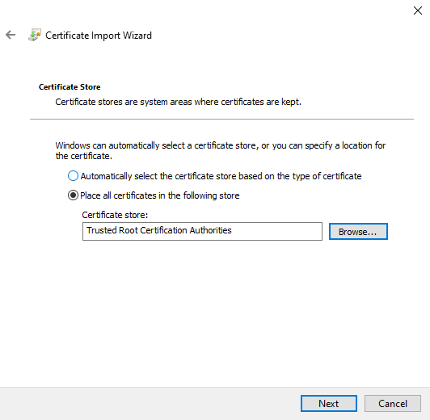
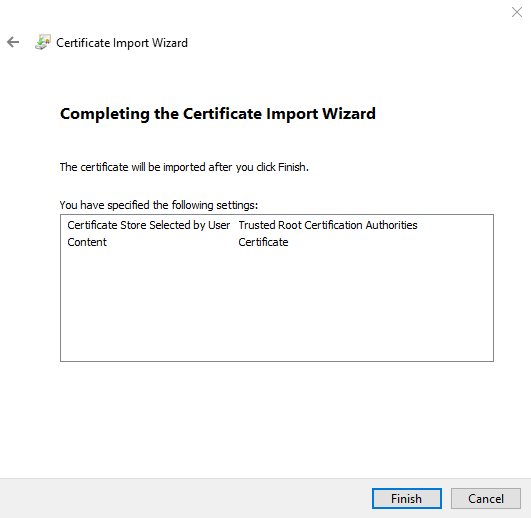
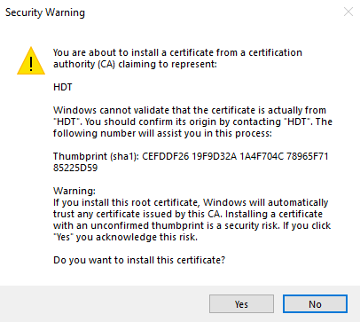
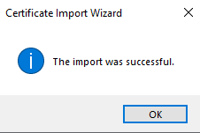
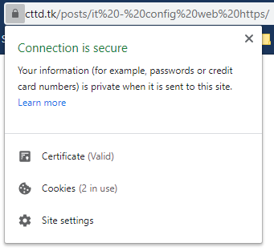

Cấu hình HTTPS cho ứng dụng web
Nhiều tính năng yêu cầu HTTPS:
- Đăng nhập qua Facebook, Google
- Sử dụng camera, microphone
- Push Notification API
- PWA, service worker
- Mã hóa, bảo mật
- ...
Với những ứng dụng public có thể truy cập ngoài Internet, chúng ta có thể sử dụng Let's encrypt (miễn phí).
Để thiết lập môi trường test, chúng ta có thể tự ký hoặc dùng tool mkcert.
Tool mkcert
Tự làm từng bước
Trên đây cũng có khá nhiều bài viết làm sao để tạo self-signed SSL cho
localhost để có thể test thử HTTPS. Nhưng những cách đó đều có một nhược
điểm là khi vào trang sẽ có cảnh báo NET::ERR_CERT_AUTHORITY_INVALID
do không ai chứng thực cho SSL của chúng ta. Và chúng ta không
thể test những công nghệ mới như PWA hay HTTP2 trên localhost.
Hôm nay mình xin giới thiệu một cách tạo SSL "xanh lét lèn lẹt" cho localhost để chúng ta có thể thử các công nghệ như PWA hay HTTP2 hoặc đơn giản là nhìn cho nó ha oai :). Chúng ta cùng bắt đầu thực hiện nhé.
Tạo Certificate Authority
Đầu tiên, chúng ta phải tự trở thành một nhà cung cấp chứng chỉ (giống như các nhà cung cấp chứng chỉ hiện tại như GlobalSign, Comodo, DigiCert, ...) và thông báo cho trình duyệt rằng những chứng chỉ được tạo bởi Certificate Authority do chúng ta cung cấp là hợp lệ.
Thực hiện tạo root Certificate Authority (CA) bằng việc đầu tiên là tạo private key:
openssl genrsa -des3 -out rootCA.key 2048
-des3 nghĩa là mã hóa key bằng DES3 trước khi output nó.
2048 là kích thước key (tính theo bit)
Tạo RSA private key.
Sau khi nhập lệnh này, chúng ta thực hiện nhập pass phrase (do tham số
-des3) để tạo. Kết quả có dạng:
$ openssl genrsa -des3 -out rootCA.key 2048 Generating RSA private key, 2048 bit long modulus .................................................................+++ .................................................+++ e is 65537 (0x10001) Enter pass phrase for rootCA.key: Verifying - Enter pass phrase for rootCA.key:
Câu lệnh trên sẽ tạo file rootCA.key.
Sau khi đã có private key, chúng ta tạo root certificate:
openssl req -x509 \
-new \
-nodes \
-key rootCA.key \
-sha256 \
-days 365 \
-out rootCA.pem
days là số ngày hiệu lực
Bạn nên chọn số ngày có hiệu lực nhỏ hơn 398 ngày, nếu không sẽ bị cảnh bảo NET::ERR_CERT_VALIDITY_TOO_LONG trên iPad.
Khi thực hiện lệnh này, nó sẽ hỏi pass phrase của file rootCA.key
mà chúng ta vừa nhập ban nãy. Bạn hãy nhập chính xác vào và thực
hiện điền một số thông tin nó yêu cầu, kết quả có dạng như sau (dữ liệu
demo do mình nhập):
$ openssl req -x509 -new -nodes -key rootCA.key -sha256 -days 1825 -out rootCA.pem
Enter pass phrase for rootCA.key:
You are about to be asked to enter information that will be incorporated
into your certificate request.
What you are about to enter is what is called a Distinguished Name or a DN.
There are quite a few fields but you can leave some blank
For some fields there will be a default value,
If you enter '.', the field will be left blank.
-----
Country Name (2 letter code) [XX]:VN
State or Province Name (full name) []:Ha Noi
Locality Name (eg, city) [Default City]:Ha Noi
Organization Name (eg, company) [Default Company Ltd]:HDT
Organizational Unit Name (eg, section) []:Information Technology
Common Name (eg, your name or your server's hostname) []:HDT
Email Address []:lockex1987@gmail.com
Sau khi thực hiện xong, bạn sẽ có được hai files là rootCA.key
và rootCA.pem. Từ bây giờ, bạn đã trở
thành một Certificate Authority (tất nhiên chỉ là ở local thôi chứ không
được như các nhà cung cấp nổi tiếng hiện tại đâu nhá) rồi.
Và cũng từ bây giờ, chúng ta có thể tạo SSL cho chính bản thân mình từ
hai file trên. Nhưng đến bước này vẫn chưa hẳn là bạn đã được một SSL
xanh lét vì các trình duyệt chưa có thông tin về root certificate (chứng
chỉ gốc) của chúng ta. Chúng ta sẽ sang bước tiếp theo, nó cực kỳ quan
trọng để SSL của chúng ta trở nên xanh lét.
Tạo file rootCA.crt để cài đặt cho dễ:
openssl x509 \
-outform pem \
-in rootCA.pem \
-out rootCA.crt
Cài đặt Root Certificate cho hệ điều hành, trình duyệt
Linux
Cài đặt package:
sudo apt-get install ca-certificates -y
Copy file cert:
sudo mkdir /usr/share/ca-certificates/extra sudo cp CERTIFICATE.crt /usr/share/ca-certificates/extra
Nếu bạn có file PEM, hãy chuyển nó sang file CRT:
openssl x509 -outform der -in CERTIFICATE.pem -out CERTIFICATE.crt
Cập nhật:
sudo update-ca-certificates
Hoặc:
sudo dpkg-reconfigure ca-certificates
Trên Ubuntu, bạn phải cài đặt Root Certificate cho từng trình duyệt (Chrome, Firefox).
Với bài viết này, mình sẽ hướng dẫn cho mọi người làm sao để cài đặt root certitficate cho Chrome và Firefox nhé.
Google Chrome
Đầu tiên, mở Google Chrome và truy cập vào đường dẫn sau: chrome://settings/certificates.
Sau đó, bạn chọn tab Authorities và
nhấp vào IMPORT rồi chọn
file rootCA.pem mà chúng ta vừa
tạo ban nãy. Sau khi chọn file đó, chúng ta sẽ có màn hình sau:

Bạn chọn tất và bấm OK là xong.

Mozilla Firefox
Đầu tiên, mở Mozilla Firefox lên và truy cập vào đường dẫn sau: about:preferences#privacy.
Sau đó, bạn kéo xuống dưới cùng của trang, tại phần Certificates
chúng ta nhấp vào View Certificates...,
tại popup này, bạn chọn tab Authorities
rồi nhấp vào Import... và
chọn file rootCA.pem mà chúng
ta vừa tạo ban nãy. Sau khi chọn file, chúng ta sẽ có màn hình sau:

Thực hiện chọn tất cả và bấm OK là xong.

Vậy là bây giờ, với hai trình duyệt này (trên máy của chúng ta) thì chúng ta đã được ngồi cùng mâm với các CA lớn trên thế giới rồi đấy!
Giờ chúng ta thử thực hiện tạo HTTPS cho một website ở local để xem kết quả như thế nào nhá.
Windows
Windows 10 recognizes .crt files, so you can right-click on rootCA.crt
> Install to open the import dialog.
Cài cho user hiện tại:

Make sure to select "Trusted Root Certification Authorities" and confirm.



Chọn next:

Confirm:

Kết thúc:

You should now get a green lock in Chrome, IE11 and Edge.
Mac
Open Keychain Access on your Mac and go to the Certificates category in your System keychain. Once there, import the rootCA.pem using File > Import Items. Double click the imported certificate and change the “When using this certificate:” dropdown to Always Trust in the Trust section.
Your certificate should look something like this inside Keychain Access if you’ve correctly followed the instructions till now.
iPad
TODO
Android
TODO
Tạo HTTPS cho local site
Đầu tiên, chúng ta tạo một private key cho domain local (mình sẽ chọn
domain là test-ssl.local):
$ openssl genrsa -out test-ssl.local.key 2048
Generating RSA private key, 2048 bit long modulus
.........................+++
...............+++
e is 65537 (0x10001)
Sau đó tạo CSR (Certificate Signing Request):
openssl req -new \
-key test-ssl.local.key \
-out test-ssl.local.csr
Chúng ta sẽ được hỏi các thông tin như lần trước tạo root CA:
$ openssl req -new -key test-ssl.local.key -out test-ssl.local.csr
You are about to be asked to enter information that will be incorporated
into your certificate request.
What you are about to enter is what is called a Distinguished Name or a DN.
There are quite a few fields but you can leave some blank
For some fields there will be a default value,
If you enter '.', the field will be left blank.
-----
Country Name (2 letter code) [XX]:VN
State or Province Name (full name) []:Hung Yen
Locality Name (eg, city) [Default City]:Van Giang
Organization Name (eg, company) [Default Company Ltd]:Van Giang Pharmacy
Organizational Unit Name (eg, section) []:IT
Common Name (eg, your name or your server's hostname) []:test-ssl.local
Email Address []:admin@test-ssl.local
Please enter the following 'extra' attributes
to be sent with your certificate request
A challenge password []:
An optional company name []:
Các bạn có thể tùy nhập các thông tin mà các bạn muốn. Phần A challegen password và An optional company name các bạn có thể bỏ trống.
Bạn có thể sử dụng tham số -subj để không phải nhập từng
bước:
-subj "/C=US/ST=New York/L=Brooklyn/O=Example Brooklyn Company/CN=examplebrooklyn.com"
Bước tiếp theo, chúng ta thực hiện tạo một file config để định nghĩa Subject Alternative Name (SAN) cho SSL này. Chúng ta thực hiện tạo file:
vi test-ssl.local.ext
Và nhập nội dung bên dưới:
authorityKeyIdentifier=keyid,issuer basicConstraints=CA:FALSE keyUsage=digitalSignature, nonRepudiation, keyEncipherment, dataEncipherment subjectAltName=@alt_names [alt_names] DNS.1=localhost DNS.2=cttd.tk DNS.3=sso-admin.cttd.tk DNS.4=sso-passport.cttd.tk DNS.5=landing-page.cttd.tk
Bạn có thể thêm nhiều DNS.x=<Domain bạn muốn>.
CA ký
Giờ chúng ta lại đóng vai trò là CA và tự ký.
Giờ chúng ta sẽ tạo certificate cho domain:
openssl x509 -req \
-in test-ssl.local.csr \
-CA rootCA.pem \
-CAkey rootCA.key \
-CAcreateserial \
-out test-ssl.local.crt \
-days 1825 \
-sha256 \
-extfile test-ssl.local.txt
Khi này chúng ta sẽ được hỏi pass phase của rootCA.pem,
bạn nhập pass phase mà bạn đã sử dụng lúc tạo rootCA.key.
$ openssl x509 -req -in test-ssl.local.csr -CA rootCA.pem -CAkey rootCA.key -CAcreateserial -out test-ssl.local.crt -days 1825 -sha256 -extfile test-ssl.local.ext Signature ok subject=/C=VN/ST=Hung Yen/L=Van Giang/O=Van Giang Pharmacy/OU=IT/CN=test-ssl.local/emailAddress=admin@test-ssl.local Getting CA Private Key Enter pass phrase for rootCA.key:
Vậy là xong, lúc này chúng ta sẽ có các file sau:
test-ssl.local.key: Private keytest-ssl.local.csr: Certificate Signing Requesttest-ssl.local.crt: Signed certificate
Bây giờ chúng ta có thể thêm HTTPS cho local domain của chúng ta với private key file và certificate file rồi. Mình sẽ thực hiện luôn demo với Nginx (mặc định là bạn đã cài đặt Nginx rồi).
Cài đặt HTTPS với Nginx
Đầu tiên, tạo thư mục để chứa code:
mkdir -p /var/www/test-ssl
Sau đó, tạo file index.html với
nội dung đơn giản để hiển thị:
vi /var/www/test-ssl/index.html
Nội dung file index.html:
<!DOCTYPE html>
<html>
<head>
<meta charset="utf-8">
<title>Test SSL Local</title>
</head>
<body>
<h1>Hello, HTTPS :D</h1>
</body>
</html>
Tiếp theo, chúng ta tạo một virtual host cho NginX:
sudo vi /etc/nginx/sites-available/test-ssl
Nội dung file virtual host:
server {
listen 443 ssl;
server_name test-ssl.local;
ssl_certificate /path/to/test-ssl.local.crt;
ssl_certificate_key /path/to/test-ssl.local.key;
ssl_protocols TLSv1 TLSv1.1 TLSv1.2;
ssl_ciphers HIGH:!aNULL:!MD5;
location / {
root /var/www/test-ssl;
index index.html index.htm;
}
}
Sau đó, tạo symlink đến thư mục /etc/nginx/site-enabled
để enable virtual host (trên thực tế, bạn có thể tạo file trực
tiếp vào thư mục này mà không cần phải tạo vào site-available,
nhưng mình khuyến khích các bạn không nên làm trực tiếp như thế. Để lúc
mình muốn disable virtual host chỉ cần xóa symlink là xong mà không hề
ảnh hưởng đến file virtual host gốc):
sudo ln -s /etc/nginx/site-available/test-ssl /etc/nginx/site-enabled
Khởi động lại NginX:
sudo service nginx restart
Tiếp theo, chúng ta sẽ trỏ domain của chúng ta về localhost bằng cách
thêm nội dung sau vào file /etc/hosts:
sudo vi /etc/hosts
Thêm dòng sau:
127.0.0.1 test-ssl.local
Vậy là xong, bây giờ bạn thử truy cập vào https://test-ssl.local để xem kết quả nhá. Chúng ta sẽ được một trang HTTPS hoàn hảo mà không hề bị màn hình warning và cũng không có dấu gạch chéo đỏ lòm ở trên thanh địa chỉ.


Vâng, bạn có nhìn thấy màu xanh lét ở Firefox không ạ? Nhìn ha oai phết, nhề. Còn với Chrome thì từ phiên bản 69 trở đi nó đã xóa bỏ secure indicator cho các trang HTTPS rồi nên chúng ta không thấy màu xanh đẹp mắt đó!
Lời kết
Từ bây giờ, bạn có thể tự tạo thêm nhiều HTTPS cho local site với root CA mà chúng ta đã tạo (bạn chỉ cần thực hiện từ bước Tạo HTTPS cho local site trở đi). Và bạn có thể thoải mái thử các công nghệ mới như PWA hay HTTP2 mà không cần phải có SSL chính chủ. Bài viết của mình đến đây là kết thúc. Hy vọng nó sẽ có ích cho các bạn trong tương lai không xa. Chào thân ái vào quyết thắng!
Cấu hình http sang https
Phải cấu hình nếu không sẽ bị lỗi 404 không tìm thấy hoặc không connect được.
Để cấu hình redirect HTTP sang HTTPS trên nginx, ta cần tạo 2 block config:
- một cho HTTP
- một cho HTTPS
Để redirect HTTP sang HTTPS sử dụng đoạn code sau:
server {
listen [::]:80;
listen 80;
server_name yourdomain.com;
return 301 https://yourdomain.com$request_uri;
}
server {
listen [::]:443 ssl http2;
listen 443 ssl http2;
server_name yourdomain.com;
# Các cấu hình khác
}
Thuật ngữ
DN: Distinguised Name
CN: Common Name
FQDN: Fully Qualified Domain Name
CA: Certificate Authority
CSR: Certificate Signing Request
DER: Distinguished Encoding Rules
PEM: Privacy Enhanced Mail
PKCS: Public-Key Cryptography Standards
PKI: Public Key Infrastructure
SHA: Secure Hash Algorithm
SSL: Secure Socket Layer
TLS: Transport Layer Security
RSA: Rivest–Shamir–Adleman. is a public-key cryptosystem that is widely used for secure data transmission.
DES: Data Encryption Standard. is a symmetric-key algorithm for the encryption of digital data.
Tham khảo
OpenSSL Essentials: Working with SSL Certificates, Private Keys and CSRs | DigitalOcean
A complete overview of SSL/TLS and its cryptographic system - YouTube
Create & sign SSL/TLS certificates with openssl - YouTube
A 6 Part Introductory OpenSSL Tutorial - KeyCDN
How to Create Your Own SSL Certificate Authority for Local HTTPS Development